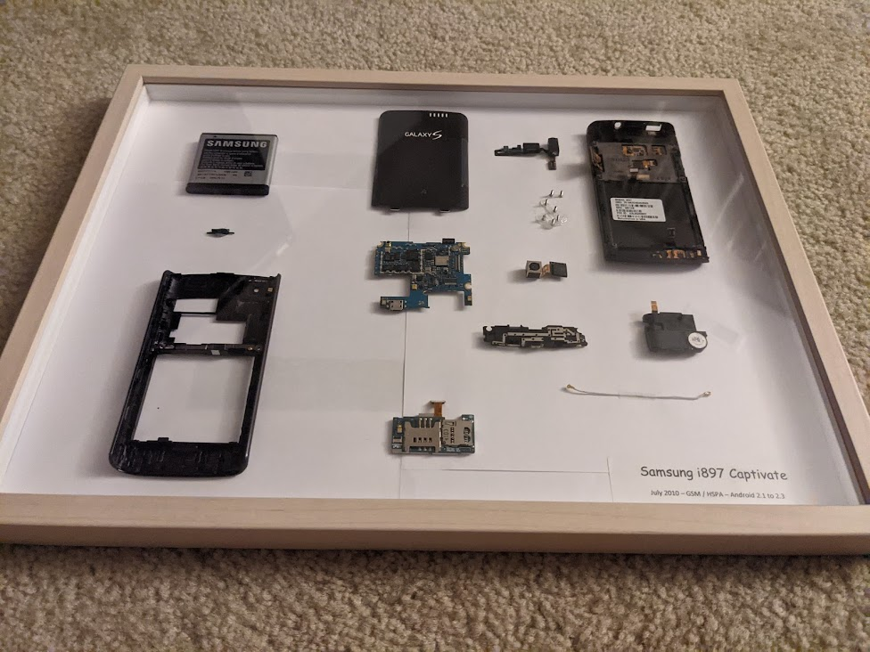
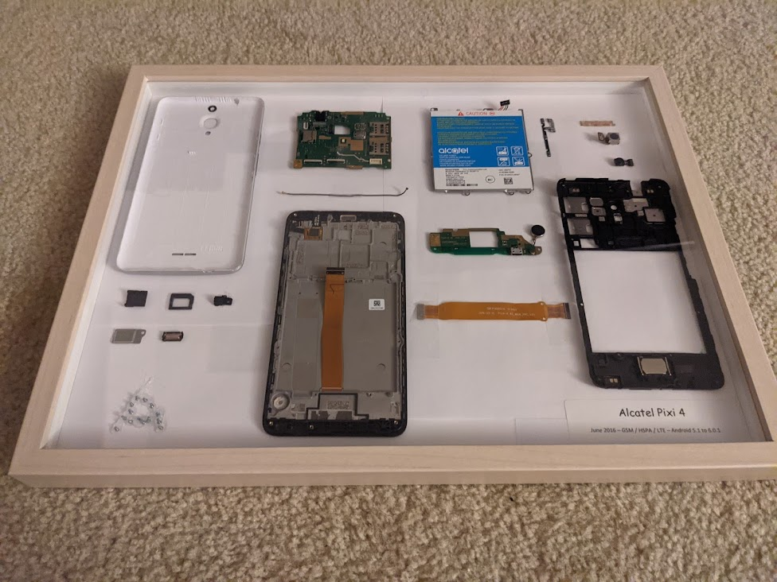
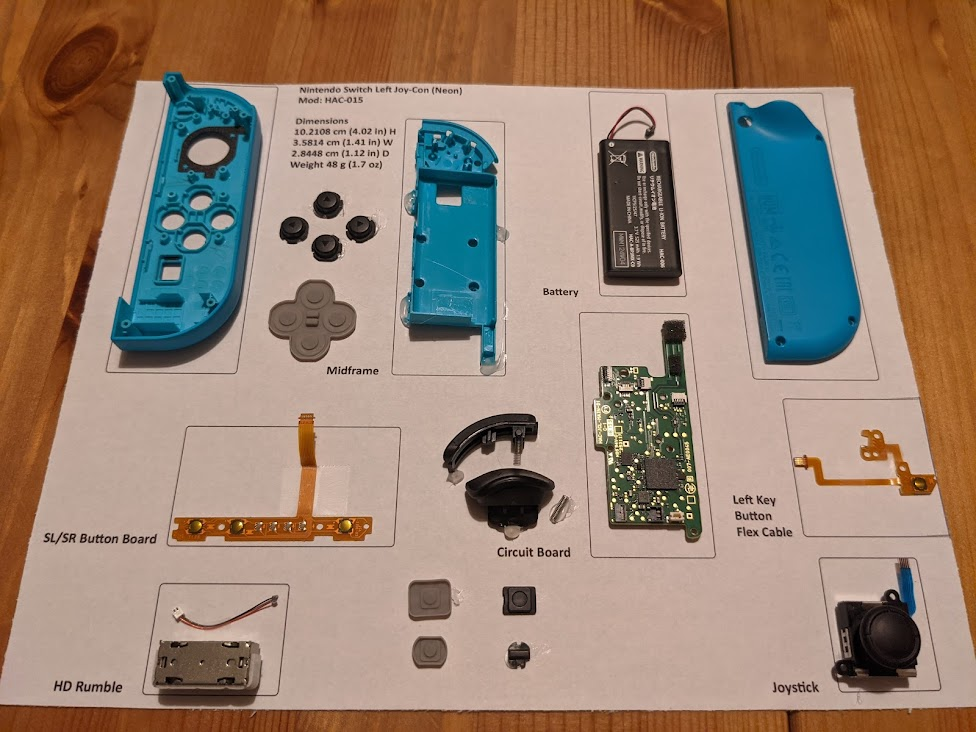
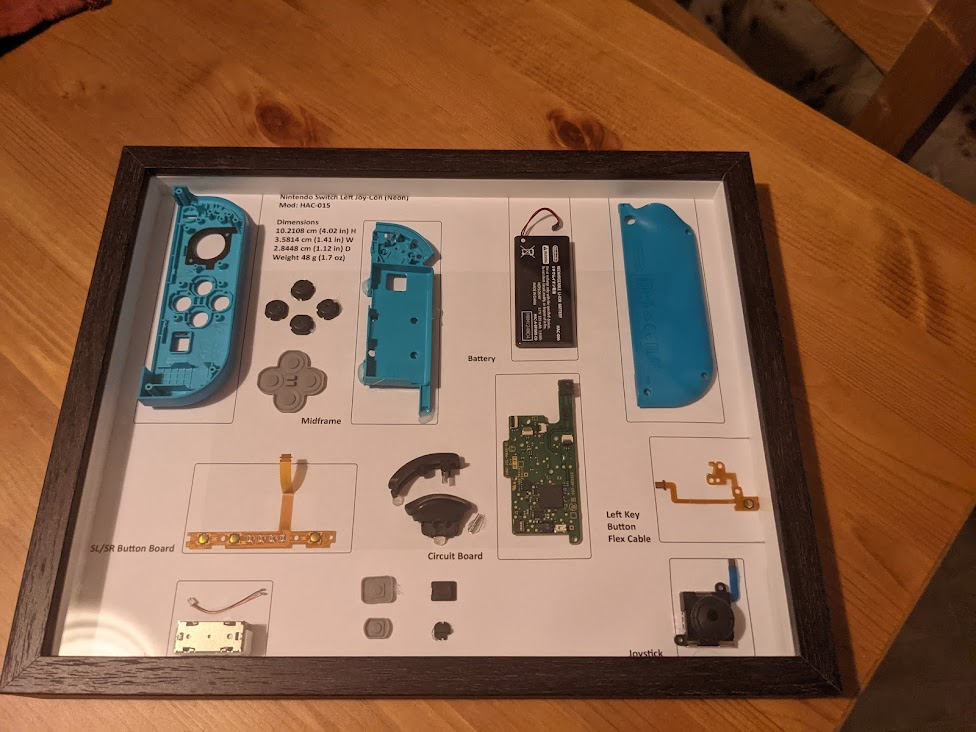

Preventing waste is more preferable. You can donate your electronics to reuse, sell your electronics to other people, or simply reuse them as common day-to-day items.
If you can't reuse or donate your electronics, recycling may be another option for you as a last resort.
Technology with parts that have been reused from recycled electronics or take from sustainable or enviornmental friendly methods are better to purchase to helping our enviornment thrive.
Reusing your technology can be a better method than recycling it in the first place. There are multiple ways you can reuse technology:
If reusing it doesn't work, you can always sell it to other people or trade it in.
Several phone carriers will actually take your old phones in replacement with another phone. They will take care of refurbishing the phone for new use or scrap it for parts at an authorized e-waste facility.
You can also sell your phone online. People are willing to purchase old or broken phones to refurbish or scrap for parts. Even if your phone doesn't work, people are still willing to buy it.
Many stores and companies offer e-recycling. Especially with offering you tax incentives for recycling your tech. You can even earn store credit for recycling items.
It's still a good idea to find a certified B.A.N. or E-Stewards accredited business so you know your electronics are going to the right place.
Click here for E-Stewards Recycler ProgramDisassembling your phone is fun so you can see the cool bits and bytes of your technology. Framing it in any area is also nice to see so the parts are all scattered showing you what each thing does.
NOTICE: Many devices have lithium-ion batteries. Puncturing or shorting the battery may cause your device to explode or catch fire. Use caution and attempt at your own risk.
   